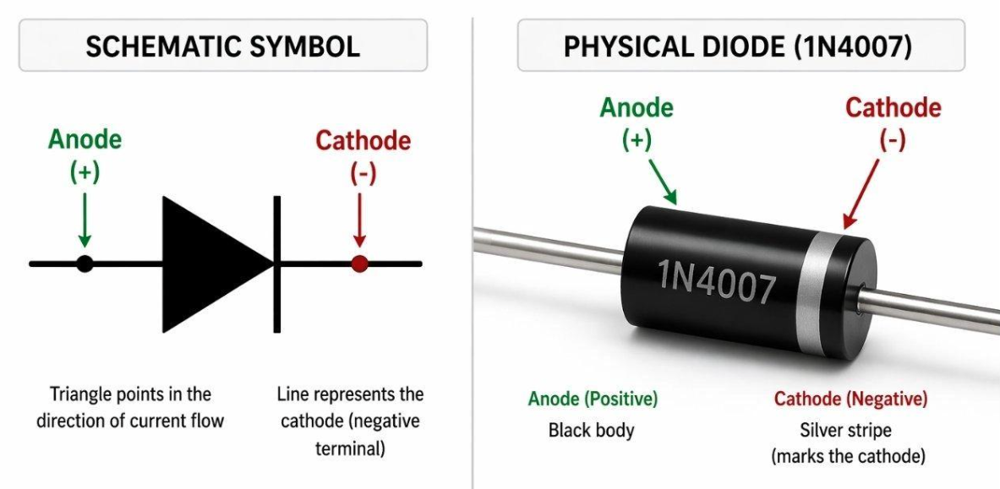
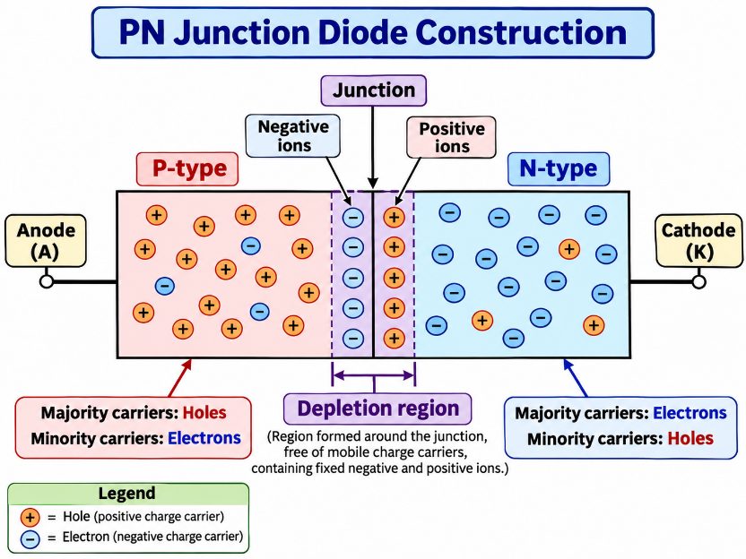
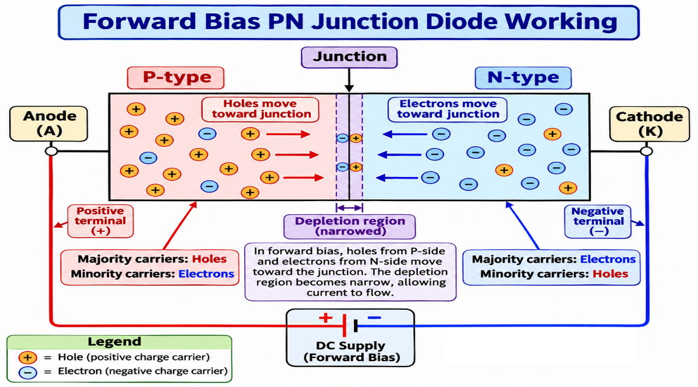
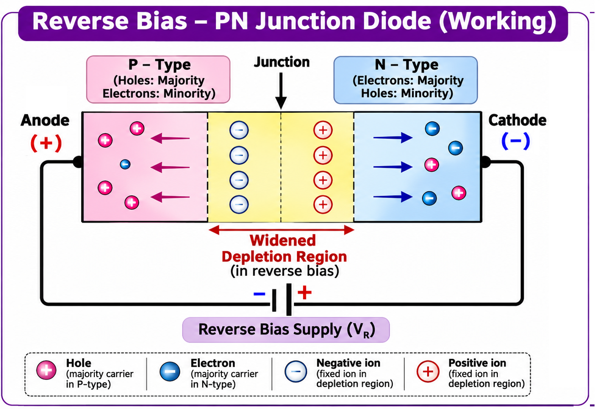

3.1 Semiconductor Basics
A semiconductor is a material whose electrical conductivity lies between that of a conductor and an insulator. Its conductivity can be controlled by doping, temperature, light and applied electric fields. Common examples are silicon (Si) and germanium (Ge). Semiconductor materials form the foundation of diodes, transistors, integrated circuits, sensors and solar cells.
| Material | Electrical Behaviour | Examples |
|---|---|---|
| Conductor | High availability of mobile charge carriers | Copper, aluminium |
| Semiconductor | Controllable conductivity | Silicon, germanium |
| Insulator | Very low conductivity under ordinary conditions | Glass, rubber |
Silicon and germanium are group-IV materials with four valence electrons. In a pure crystal, each atom shares its valence electrons with four neighbouring atoms, forming covalent bonds. At low temperatures, few mobile carriers exist; at room temperature, thermal energy creates some free electrons and holes. Semiconductor material has two main types:
Intrinsic Semiconductor
An intrinsic semiconductor is a pure semiconductor without intentional impurity doping.
Extrinsic Semiconductor and Doping
Doping means deliberately adding a controlled, small concentration of impurity atoms to a pure semiconductor to increase its conductivity. The resulting material is an extrinsic semiconductor. The two types are N-type and P-type.
| Feature | P-type | N-type |
|---|---|---|
| Dopant | Trivalent acceptor | Pentavalent donor |
| Example impurity | Boron | Phosphorus |
| Majority carriers | Holes | Electrons |
| Minority carriers | Electrons | Holes |
3.2 PN Junction Diode — Introduction & Construction
Introduction
A diode, or PN junction diode, is also called a semiconductor diode, as Si and Ge are the two popular semiconductor materials used in the diode. It has two (di) terminals (electrodes): a terminal with + charge called the Anode, denoted by the letter A, and a – charge terminal called the Cathode, denoted by the letter C (K).
Its schematic symbol and physical structure are given below:

Fig 3.1 — Schematic symbol of a diode (left) and the physical 1N4007 diode (right), with anode and cathode marked
A commonly used semiconductor diode, such as the 1N4007 rectifier diode, has a small cylindrical body, generally black in colour, with two metallic terminals — usually made of a material like aluminium or copper — extending from opposite ends, called terminals, leads or electrodes.
Construction
- A PN junction diode is made up of two types of material: P-type and N-type.
- In P-type material, because of trivalent impurities, holes act as majority charge carriers, whereas electrons act as minority charge carriers.
- Similarly, in N-type material, because of pentavalent impurities, electrons act as majority charge carriers and holes are minority charge carriers.
- The point at which these two different P and N types come together is called the junction.
- At the junction, negative charged ions accumulate near the junction on the P side, and positive charged ions accumulate near the junction on the N side. Hence a region forms near the junction which is called the depletion region, and the potential associated with it is called the barrier potential.
- The diode has two electrodes, anode and cathode, made from conducting material like aluminium and copper.

Fig 3.2 — Construction of a PN junction diode, showing the P-type and N-type regions, the junction and the depletion region
3.3 Working of PN Junction Diode
(1) Forward Biasing
If the P region/anode is connected to the positive terminal of the battery and the N side, i.e. the cathode of the diode, is connected to the negative terminal of the external DC source, then this biasing is said to be forward biasing.
- Due to the positive terminal of the external source connected to the P region, electrons from the N side are pushed towards the P side. Similarly, the positive end of the supply pushes holes from the P side toward the N side.
- With an increase in the external supply voltage, more and more holes and electrons start travelling towards the junction. The holes start converting the negative ions into neutral atoms, and the electrons convert the positive ions into neutral atoms. As a result, the width of the depletion region is reduced.
- Due to the reduction in depletion region width, the barrier potential also reduces. Eventually, at a particular value, this depletion region collapses, and hence a large number of electron and hole majority carriers cross the junction and a continuous current flows through it. This is known as the forward current.

Fig 3.3 — Working of a PN junction diode under forward bias: the depletion region narrows and current flows
(2) Reverse Biasing
If the P region of a diode is connected to the negative terminal of the external DC source and the N region is connected to the positive terminal of the supply, then the diode is said to be reverse biased.
- The reverse current flows exactly in the opposite direction to that of the forward current. When a diode is reverse biased, majority carriers in the P region are attracted towards the negative terminal of the supply and majority carriers on the N side are attracted towards the positive terminal of the supply.
- Due to the movement of electrons and holes away from the junction, the width of the depletion region increases.
- Due to that, the barrier potential also increases. Because of that, no forward current flows through the diode, but because of thermally generated minority charge carriers, a very small current flows through the diode — this current is known as the reverse current or reverse saturation current.
- With a further increase in the applied reverse voltage, because of the avalanche effect, breakdown occurs — this is known as avalanche breakdown.

Fig 3.4 — Working of a PN junction diode under reverse bias: the depletion region widens and only a small reverse saturation current flows
3.4 Applications of PN Junction Diode
- In rectifier circuits.
- In voltage multipliers.
- As a feedback diode.
- As a freewheeling diode.
- In AM detection.